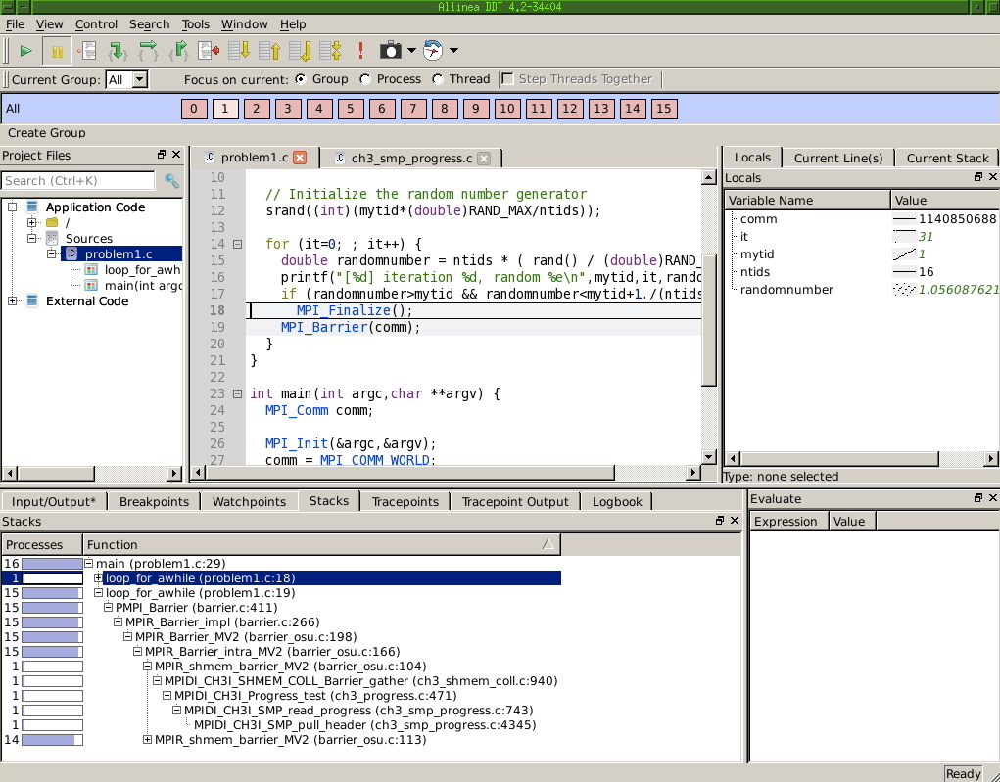

\noindent Debugging is like being the detective in a crime movie where you are also the murderer. (Filipe Fortes, 2013)
When a program misbehaves, debugging is the process of finding out why . There are various strategies of finding errors in a program. The crudest one is debugging by print statements. If you have a notion of where in your code the error arises, you can edit your code to insert print statements, recompile, rerun, and see if the output gives you any suggestions. There are several problems with this:
For these reasons, the best way to debug is by the use of an interactive debugger , a program that allows you to monitor and control the behavior of a running program. In this section you will familiarize yourself with gdb and lldb , the open source debuggers of the GNU and clang projects respectively. Other debuggers are proprietary, and typically come with a compiler suite. Another distinction is that gdb is a commandline debugger; there are graphical debuggers such as ddd (a~frontend to gdb) or DDT and TotalView (debuggers for parallel codes). We limit ourselves to gdb, since it incorporates the basic concepts common to all debuggers.
In this tutorial you will debug a number of simple programs with gdb and valgrind. The files can be found in the repository in the directory code/gdb .
TABLE: List of common gdb / lldb commands
| \toprule gdb | lldb |
|
\midrule Starting a debugger run | |
| \midrule \$ gdb program | \$ lldb program |
| (gdb) run | (lldb) run |
|
\midrule Displaying a stack trace | |
| \midrule (gdb) where | (lldb) thread backtrace |
|
\midrule Investigate a specific frame | |
| \midrule frame 2 | frame select 2 |
|
\midrule Run/step | |
| \midrule run / step / continue | thread continue / step-in/over/out |
|
\midrule Set a breakpoint at a line | |
| \midrule break foo.c:12 | breakpoint set [ -f foo.c ] -l 12 |
| break foo.c:12 if n>0 | |
| info breakpoints | |
|
\midrule Set a breakpoint for exceptions | |
| \midrule catch throw | break set -E C++ |
| \bottomrule |
crumb trail: > debug > Invoking the debugger
There are three ways of using gdb: using it to start a program, attaching it to an already running program, or using it to inspect a core dump . We will only consider the first possibility.
| \toprule Starting a debugger run | |
| \midrule gdb | lldb |
| \midrule \$ gdb program | \$ lldb program |
| (gdb) run | (lldb) run |
| \bottomrule |
Here is an example of how to start gdb with program that has no arguments (Fortran users, use hello.F ): \codelisting{tutorials/gdb/c/hello.c}
%% cc -g -o hello hello.c # regular invocation: %% ./hello hello world # invocation from gdb: %% gdb hello GNU gdb 6.3.50-20050815 # ..... [version info] Copyright 2004 Free Software Foundation, Inc. .... [copyright info] .... (gdb) run Starting program: /home/eijkhout/tutorials/gdb/hello Reading symbols for shared libraries +. done hello world Program exited normally. (gdb) quit %%Important note: the program was compiled with the flag} -g . This causes the symbol table (that is, the translation from machine address to program variables) and other debug information to be included in the binary. This will make your binary larger than strictly necessary, but it will also make it slower, for instance because the compiler will not perform certain optimizations\footnote{Compiler optimizations are not supposed to change the semantics of a program, but sometimes do. This can lead to the nightmare scenario where a program crashes or gives incorrect results, but magically works correctly with compiled with debug and run in a debugger.}.
To illustrate the presence of the symbol table do
%% cc -g -o hello hello.c %% gdb hello GNU gdb 6.3.50-20050815 # ..... version info (gdb) listand compare it with leaving out the -g flag:
%% cc -o hello hello.c %% gdb hello GNU gdb 6.3.50-20050815 # ..... version info (gdb) listFor a program with commandline input we give the arguments to the run command (Fortran users use say.F ):
\codelisting{tutorials/gdb/c/say.c} \vfill %% cc -o say -g say.c %% ./say 2 hello world hello world %% gdb say .... the usual messages ... (gdb) run 2 Starting program: /home/eijkhout/tutorials/gdb/c/say 2 Reading symbols for shared libraries +. done hello world hello world Program exited normally.
crumb trail: > debug > Finding errors: where, frame, print
Let us now consider some programs with errors.
crumb trail: > debug > Finding errors: where, frame, print > C programs
The following code has several errors. We will use the debugger to uncover them.
// square.c
int nmax,i;
float *squares,sum;
fscanf(stdin,"%d",nmax);
for (i=1; i<=nmax; i++) {
squares[i] = 1./(i*i); sum += squares[i];
}
printf("Sum: %e\n",sum);
The segmentation fault (other messages are possible too) indicates that we are accessing memory that we are not allowed to, making the program exit. A debugger will quickly tell us where this happens:
%% gdb square (gdb) run 50000 Program received signal EXC_BAD_ACCESS, Could not access memory. Reason: KERN_INVALID_ADDRESS at address: 0x000000000000eb4a 0x00007fff824295ca in __svfscanf_l ()Apparently the error occurred in a function __svfscanf_l , which is not one of ours, but a system function. Using the backtrace (or bt , also where or w ) command we display the call stack . This usually allows us to find out where the error lies:
| \toprule Displaying a stack trace | |
| \midrule gdb | lldb |
| \midrule (gdb) where | (lldb) thread backtrace |
| \bottomrule |
{\small
(gdb) where #0 0x00007fff824295ca in __svfscanf_l () #1 0x00007fff8244011b in fscanf () #2 0x0000000100000e89 in main (argc=1, argv=0x7fff5fbfc7c0) at square.c:7}
We inspect the actual problem:
| \toprule Investigate a specific frame | |
| \midrule gdb | clang |
| frame 2 | frame select 2 |
| \bottomrule |
We take a close look at line 7, and see that we need to change nmax to &nmax .
There is still an error in our program: {\small
(gdb) run 50000 Program received signal EXC_BAD_ACCESS, Could not access memory. Reason: KERN_PROTECTION_FAILURE at address: 0x000000010000f000 0x0000000100000ebe in main (argc=2, argv=0x7fff5fbfc7a8) at square1.c:9 9 squares[i] = 1./(i*i); sum += squares[i];} We investigate further:
(gdb) print i $1 = 11237 (gdb) print squares[i] Cannot access memory at address 0x10000f000 (gdb) print squares $2 = (float *) 0x0and we quickly see that we forgot to allocate squares .
Memory errors can also occur if we have a legitimate array, but we access it outside its bounds. The following program fills an array, forward, and reads it out, backward. However, there is an indexing error in the second loop.
// up.c
int nlocal = 100,i;
double s, *array = (double*) malloc(nlocal*sizeof(double));
for (i=0; i<nlocal; i++) {
double di = (double)i;
array[i] = 1/(di*di);
}
s = 0.;
for (i=nlocal-1; i>=0; i++) {
double di = (double)i;
s += array[i];
}
You see that the index where the debugger finally complains is quite a bit larger than the size of the array.
Can you think of a reason why indexing out of bounds is not immediately fatal? What would determine where it does become a problem? (Hint: how is computer memory structured?)In section 30.6.2.1 you will see a tool that spots any out-of-bound indexing.
crumb trail: > debug > Finding errors: where, frame, print > Fortran programs
Compile and run the following program: \codelisting{tutorials/gdb/f/square.F} It should end prematurely with a message such as `Illegal instruction'. Running the program in gdb quickly tells you where the problem lies:
(gdb) run Starting program: tutorials/gdb//fsquare Reading symbols for shared libraries ++++. done Program received signal EXC_BAD_INSTRUCTION, Illegal instruction/operand. 0x0000000100000da3 in square () at square.F:7 7 sum = sum + squares(i)We take a close look at the code and see that we did not allocate squares properly.
crumb trail: > debug > Stepping through a program
| \toprule Stepping through a program | ||
| \midrule gdb | lldb | meaning |
| run | start a run | |
| cont | continue from breakpoint | |
| next | next statement on same level | |
| step | next statement, this level or next | |
| \bottomrule |
Often the error in a program is sufficiently obscure that you need to investigate the program run in detail. Compile the following program \codelisting{tutorials/gdb/c/roots.c} and run it:
%% ./roots sum: nanStart it in gdb as before:
%% gdb roots GNU gdb 6.3.50-20050815 Copyright 2004 Free Software Foundation, Inc. ....but before you run the program, you set a breakpoint at main . This tells the execution to stop, or `break', in the main program.
(gdb) break main Breakpoint 1 at 0x100000ea6: file root.c, line 14.Now the program will stop at the first executable statement in main :
(gdb) run Starting program: tutorials/gdb/c/roots Reading symbols for shared libraries +. done Breakpoint 1, main () at roots.c:14 14 float x=0;Most of the time you will set a breakpoint at a specific line:
| \toprule Set a breakpoint at a line | |
| \midrule gdb | lldb |
| break foo.c:12 | breakpoint set [ -f foo.c ] -l 12 |
| \bottomrule |
If execution is stopped at a breakpoint, you can do various things, such as issuing the step command:
Breakpoint 1, main () at roots.c:14 14 float x=0; (gdb) step 15 for (i=100; i>-100; i--) (gdb) 16 x += root(i); (gdb)(if you just hit return, the previously issued command is repeated). Do a number of step s in a row by hitting return. What do you notice about the function and the loop?
Switch from doing step to doing next . Now what do you notice about the loop and the function?
Set another breakpoint: break 17 and do cont . What happens?
Rerun the program after you set a breakpoint on the line with the sqrt call. When the execution stops there do where and list .
crumb trail: > debug > Inspecting values
Run the previous program again in gdb: set a breakpoint at the line that does the sqrt call before you actually call run . When the program gets to line 8 you can do print n . Do cont . Where does the program stop?
If you want to repair a variable, you can do set var=value . Change the variable n and confirm that the square root of the new value is computed. Which commands do you do?
crumb trail: > debug > Breakpoints
If a problem occurs in a loop, it can be tedious keep typing cont and inspecting the variable with print . Instead you can add a condition to an existing breakpoint. First of all, you can make the breakpoint subject to a condition: with
condition 1 if (n<0)breakpoint 1 will only obeyed if n<0 is true.
You can also have a breakpoint that is only activated by some condition. The statement
break 8 if (n<0)means that breakpoint 8 becomes (unconditionally) active after the condition n<0 is encountered.
| \toprule Set a breakpoint | ||
| \midrule gdb | lldb | |
| \midrule break foo.c:12 | breakpoint set [ -f foo.c ] -l 12 | |
| break foo.c:12 if n | gt;0 | |
| \bottomrule |
You can break on NaN with the following trick: break foo.c:12 if x!=x
using the fact that NaN is the only number not equal to itself.
Another possibility is to use ignore 1 50 , which will not stop at breakpoint 1 the next 50 times.
Remove the existing breakpoint, redefine it with the condition n<0 and rerun your program. When the program breaks, find for what value of the loop variable it happened. What is the sequence of commands you use?
You can set a breakpoint in various ways:
Information about breakpoints:
| \toprule Set a breakpoint for exceptions | ||
| \midrule gdb | clang\ catch throw | break set -E C++ |
| \bottomrule |
Finally, you can execute commands at a breakpoint:
break 45 command print x cont endThis states that at line 45 variable x is to be printed, and execution should immediately continue.
If you want to run repeated gdb sessions on the same program, you may want to save an reload breakpoints. This can be done with
save-breakpoint filename source filename
crumb trail: > debug > Memory debugging
Many problems in programming stem from memory errors. We start with a sort description of the most common types, and then discuss tools that help you detect them.
crumb trail: > debug > Memory debugging > Type of memory errors
crumb trail: > debug > Memory debugging > Type of memory errors > Invalid pointers
Dereferencing a pointer that does not point to an allocated object can lead to an error. If your pointer points into valid memory anyway, your computation will continue but with incorrect results.
However, it is more likely that your program will probably exit with a segmentation violation or a bus error .
crumb trail: > debug > Memory debugging > Type of memory errors > Out-of-bounds errors
Addressing outside the bounds of an allocated object is less likely to crash your program and more likely to give incorrect results.
Exceeding bounds by a large enough amount will again give a segmentation violation, but going out of bounds by a small amount may read invalid data, or corrupt data of other variables, giving incorrect results that may go undetected for a long time.
crumb trail: > debug > Memory debugging > Type of memory errors > Memory leaks
We speak of a memory leak if allocated memory becomes unreachable. Example:
if (something) { double *x = malloc(10*sizeofdouble); // do something with x }After the conditional, the allocated memory is not freed, but the pointer that pointed to has gone away.
This last type especially can be hard to find. Memory leaks will only surface in that your program runs out of memory. That in turn is detectable because your allocation will fail. It is a good idea to always check the return result of your malloc or allocate statement!
crumb trail: > debug > Memory debugging > Memory tools
crumb trail: > debug > Memory debugging > Memory tools > Valgrind
Insert the following allocation of squares in your program:
squares = (float *) malloc( nmax*sizeof(float) );Compile and run your program. The output will likely be correct, although the program is not. Can you see the problem?
To find such subtle memory errors you need a different tool: a memory debugging tool. A popular (because open source) one is valgrind purify .
\codelisting{tutorials/gdb/c/square1.c} Compile this program with cc -o square1 square1.c and run it with valgrind square1 (you need to type the input value). You will lots of output, starting with: {\small
%% valgrind square1 ==53695== Memcheck, a memory error detector ==53695== Copyright (C) 2002-2010, and GNU GPL'd, by Julian Seward et al. ==53695== Using Valgrind-3.6.1 and LibVEX; rerun with -h for copyright info ==53695== Command: a.out ==53695== 10 ==53695== Invalid write of size 4 ==53695== at 0x100000EB0: main (square1.c:10) ==53695== Address 0x10027e148 is 0 bytes after a block of size 40 alloc'd ==53695== at 0x1000101EF: malloc (vg_replace_malloc.c:236) ==53695== by 0x100000E77: main (square1.c:8) ==53695== ==53695== Invalid read of size 4 ==53695== at 0x100000EC1: main (square1.c:11) ==53695== Address 0x10027e148 is 0 bytes after a block of size 40 alloc'd ==53695== at 0x1000101EF: malloc (vg_replace_malloc.c:236) ==53695== by 0x100000E77: main (square1.c:8)} Valgrind is informative but cryptic, since it works on the bare memory, not on variables. Thus, these error messages take some exegesis. They state that a line 10 writes a 4-byte object immediately after a block of 40 bytes that was allocated. In other words: the code is writing outside the bounds of an allocated array. Do you see what the problem in the code is?
Note that valgrind also reports at the end of the program run how much memory is still in use, meaning not properly free d.
If you fix the array bounds and recompile and rerun the program, valgrind still complains: {\small
==53785== Conditional jump or move depends on uninitialised value(s) ==53785== at 0x10006FC68: __dtoa (in /usr/lib/libSystem.B.dylib) ==53785== by 0x10003199F: __vfprintf (in /usr/lib/libSystem.B.dylib) ==53785== by 0x1000738AA: vfprintf_l (in /usr/lib/libSystem.B.dylib) ==53785== by 0x1000A1006: printf (in /usr/lib/libSystem.B.dylib) ==53785== by 0x100000EF3: main (in ./square2)} Although no line number is given, the mention of printf gives an indication where the problem lies. The reference to an `uninitialized value' is again cryptic: the only value being output is sum , and that is not uninitialized: it has been added to several times. Do you see why valgrind calls it uninitialized all the same?
crumb trail: > debug > Memory debugging > Memory tools > Electric fence
The electric fence library is one of a number of tools that supplies a new malloc with debugging support. These are linked instead of the malloc of the standard libc .
cc -o program program.c -L/location/of/efence -lefenceSuppose your program has an out-of-bounds error. Running with gdb, this error may only become apparent if the bounds are exceeded by a large amount. On the other hand, if the code is linked with libefence , the debugger will stop at the very first time the bounds are exceeded.
crumb trail: > debug > Parallel debugging

FIGURE 30.1: Display of 16 processes in the DDT debugger
Debugging in parallel is harder than sequentially, because you will run errors that are only due to interaction of processes such as deadlock ; see section 2.6.3.6 .
As an example, consider this segment of MPI code:
MPI_Init(0,0); // set comm, ntids, mytid for (int it=0; ; it++) { double randomnumber = ntids * ( rand() / (double)RAND_MAX ); printf("[%d] iteration %d, random %e\n",mytid,it,randomnumber); if (randomnumber>mytid && randomnumber<mytid+1./(ntids+1)) MPI_Finalize(); } MPI_Finalize();Each process computes random numbers until a certain condition is satisfied, then exits. However, consider introducing a barrier (or something that acts like it, such as a reduction):
for (int it=0; ; it++) { double randomnumber = ntids * ( rand() / (double)RAND_MAX ); printf("[%d] iteration %d, random %e\n",mytid,it,randomnumber); if (randomnumber>mytid && randomnumber<mytid+1./(ntids+1)) MPI_Finalize(); MPI_Barrier(comm); } MPI_Finalize();Now the execution will hang, and this is not due to any particular process: each process has a code path from init to finalize that does not develop any memory errors or other runtime errors. However as soon as one process reaches the finalize call in the conditional it will stop, and all other processes will be waiting at the barrier.
Figure 30.1 shows the main display of the Allinea DDT debugger ( http://www.allinea.com/products/ddt ) at the point where this code stops. Above the source panel you see that there are 16 processes, and that the status is given for process 1. In the bottom display you see that out of 16 processes 15 are calling MPI_Barrier on line 19, while one is at line 18. In the right display you see a listing of the local variables: the value specific to process 1. A rudimentary graph displays the values over the processors: the value of ntids is constant, that of mytid is linearly increasing, and it is constant except for one process.
Make and run ring_1a . The program does not terminate and does not crash. In the debugger you can interrupt the execution, and see that all processes are executing a receive statement. This is probably a case of deadlock. Diagnose and fix the error.The author of ring_1c was very confused about how MPI works. Run the program. While it terminates without a problem, the output is wrong. Set a breakpoint at the send and receive statements to figure out what is happening.
crumb trail: > debug > Further reading
A good tutorial: http://www.dirac.org/linux/gdb/ .
Reference manual: http://www.ofb.net/gnu/gdb/gdb_toc.html .